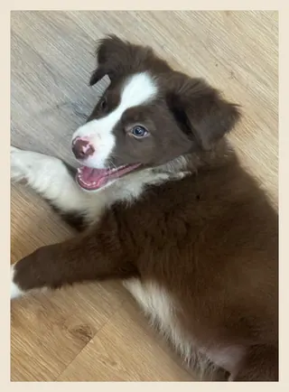

~/projetos
github

~/interesting/posts
mantenha-se atualizado do que está rolando agora.
a IA roda no seu browser (é anônimo hihi) · modelinho de 118 MB, baixa uma vez
~/interesting/projects
o que está em alta no Hugging Face e no GitHub esta semana.
a IA roda no seu browser (é anônimo hihi) · modelinho de 118 MB, baixa uma vez
~/links
curadoria + starsodisseiadoputo.cc
Canto separado para viagens tech ou nao, ideias de roteiro, sonhos e textos que nao precisam fingir normalidade.
crackmes
Some CrackMe codes for Linux x86/x86_64
Awesome-Hacking
Awesome lists for hackers, pentesters and security researchers
kernel_modules
linux kernel modules examples
awesome-language-agents
List of language agents